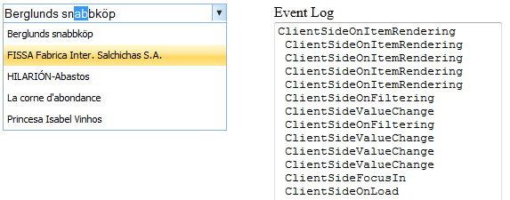

Client-side events are triggered in response to specific actions in the client.
Use Case Scenarios
You are able to control the AutoComplete text box on the client-side by using the client-side events.
You can get the current value of the AutocompleteTextBox control, the active item in the suggestion list, current event name, and instance of AutoComplete text box using the client-side event arguments.
Events
|
Event |
Description |
Arguments |
Type |
|
ClientSideFocusIn |
Raised when the AutoComplete text box gains focus. |
obj, args |
Client side |
|
ClientSideFocusOut |
Raised when the AutoComplete text box loses focus. |
obj, args |
Client side |
|
ClientSideValueChange |
Raised when the AutoComplete text box value changes. |
obj, args |
Client side |
|
ClientSideOnLoad |
Triggered when the AutoComplete text box loads. |
obj, args |
Client side |
|
ClientSideOnFiltering |
Triggered on client-side data fetching. |
obj, args |
Client side |
|
ClientSideOnBeforeRequest |
Triggered before AJAX post. |
obj, args |
Client side |
|
ClientSideOnSuccess |
Triggered on AJAX post success. |
obj, args |
Client side |
|
ClientSideOnComplete |
Triggered on AJAX post complete. |
obj, args |
Client side |
|
ClientSideOnFailure |
Triggered on AJAX post failure. |
obj, args |
Client side |
Sample Link
To view a sample:
1. Open the Essential Tools sample browser from the dashboard. (Refer to the Samples and Location chapter).
2. Navigate to Tools.MVC > AutoComplete Textbox > Client-Side Events
Adding Client-Side Events to an Application
Using AutocompleteTextBoxBuilder
To use client-side events in the AutoComplete text box by using AutocompleteTextBoxBuilder:
1. Create a view.
2. In the view, invoke the AutocompleteTextBox helper with the control ID.
3. Set the script function name for the ClientSideEvents.
|
[script]
function ClientSideEvents(oEv, args) { $("#EventLog").val(args.get_EventName() + "\n " + $("#EventLog").val()); }
|
|
[ASPX]
<%=Html.Syncfusion().AutocompleteTextBox("myAutocomplete").RequestMapper("GetData") .ClientSideFocusIn("ClientSideEvents").ClientSideFocusOut("ClientSideEvents") .ClientSideOnBeforeRequest("ClientSideEvents").ClientSideOnComplete("ClientSideEvents") .ClientSideOnFailure("ClientSideEvents").ClientSideOnFiltering("ClientSideEvents") .ClientSideOnLoad("ClientSideEvents").ClientSideOnSelect("ClientSideEvents") .ClientSideOnSuccess("ClientSideEvents").ClientSideValueChange("ClientSideEvents") .ClientSideOnItemRendering("ClientSideEvents")
%>
|
|
[Razor] @Html.Syncfusion().AutocompleteTextBox("myAutocomplete.RequestMapper("GetData") .ClientSideFocusIn("ClientSideEvents").ClientSideFocusOut("ClientSideEvents") .ClientSideOnBeforeRequest("ClientSideEvents").ClientSideOnComplete("ClientSideEvents") .ClientSideOnFailure("ClientSideEvents").ClientSideOnFiltering("ClientSideEvents") .ClientSideOnLoad("ClientSideEvents").ClientSideOnSelect("ClientSideEvents") .ClientSideOnSuccess("ClientSideEvents").ClientSideValueChange("ClientSideEvents") .ClientSideOnItemRendering("ClientSideEvents")
|
|
Controller public ActionResult Index() { return View(); } [AcceptVerbs(HttpVerbs.Post)] public ActionResult GetData(string QueryString) { Northwind context = SqlCE; var dataSource = from suggestion in context.Customers select suggestion.CustomerID;
ActionResult jsonResult = dataSource.AutocompleteActionResult(); return jsonResult; } |
4. Build and run the application.

Figure 81: AutoComplete—Client-Side Events